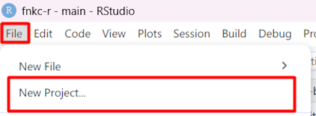
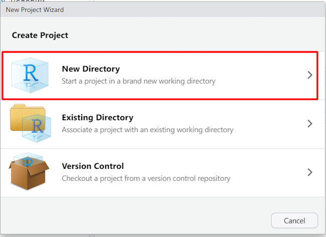
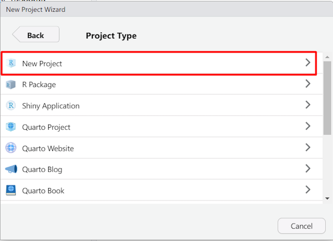
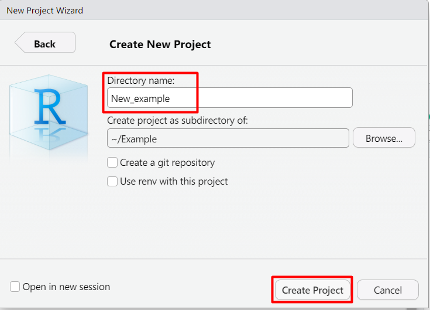
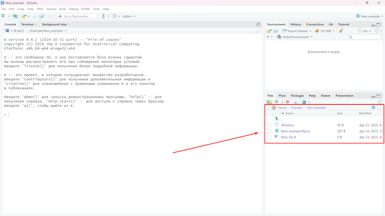
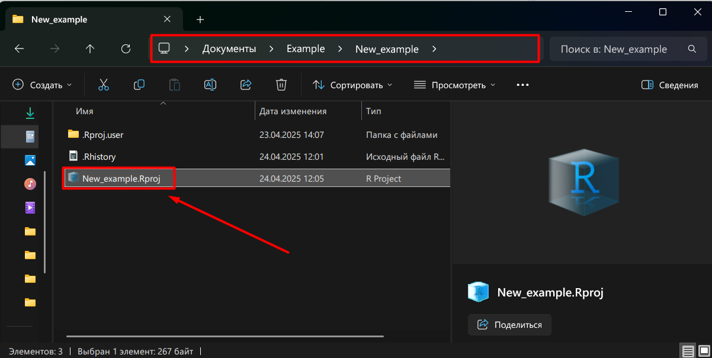
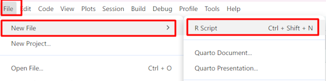
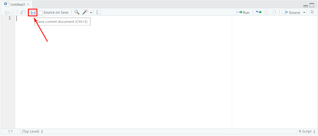
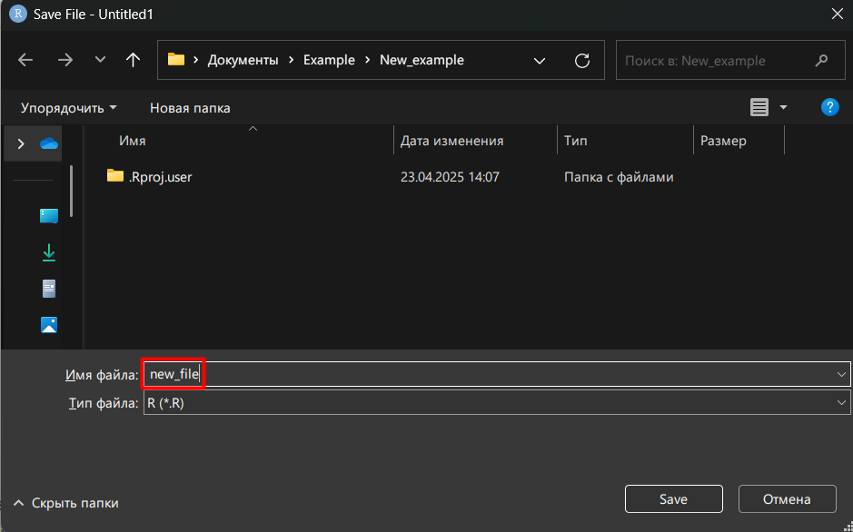
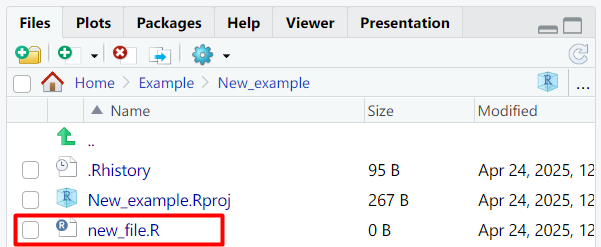

3 Работа с проектами и файлами
Проект - это папка на компьютере, в которой запускается R. В ней должны находиться файлы с данными, скрипты для расчетов и результаты (графики и таблицы).
3.1 Создание проекта
Для создания нового проекта в верхнем левом меню выберите File → New Project.

В появившемся окне выберите New Directory. На следующем шаге New Project.


Введите название проекта (так же будет называться папка на компьютере). Также можно указать где эта папка будет создана (кнопка Browse).

После этого кликаем на кнопку Create Project внизу. Проект будет создан и загружен. В окне обзора будут видны файлы этого проекта.

3.2 Открытие проекта
Теперь, если зайти в папку с проектом через проводник, можно найти файл проекта (на примере это New_example.Rpoj). Если дважды кликнуть по этому файлу, у вас откроется окно Rstudio с этим проектом.

3.3 Создание и сохранение файла
Для создания нового файла выбираем меню File -> New file -> R script.
После этого открывается новый пустой файл.

Чтобы сохранить файл нажмите кнопку сохранения вверху окна. В появившемся диалоговом окне введите название файла и нажмите Save.


Теперь наш файл виден в окне просмотра Rstudio, при следующем сохранении менять имя файла не потребуется.
